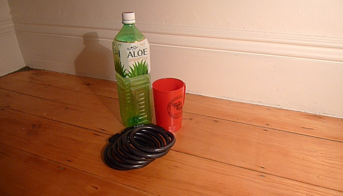
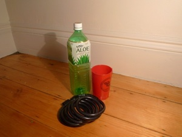
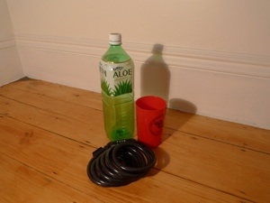
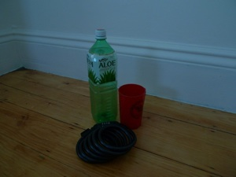

Recombining light to create interesting effects

Relighting
Recombination
intermediate images
Notice the extra shadows? How about the new specularity pairs on the bike lock? Yes! We’ve combined the images from the right and left lamps.
The image on the right is adjusted to only subtract the ambient term once instead of twice.
In the bottom right image, we follow the typical procedure and add the left and right lamp illumination images and subtract two times the ambient image’s light from the total to get only the influence from the lamps. Unfortunately, this picture doesn’t look as good. The pervasive reddish hue is from the subtraction of the blue channel in the ambient term, which is oddly high, perhaps due to the incoming sunlight. The light spots are from the shadows cast in the ambient image.
Capture
source images
We begin by capturing our scene, which includes an empty drink bottle, a cup, and a bike lock. We light the scene with a lamp in two positions. The ambient image, shown below, is captured when the light is off. The settings on the camera were 1/1.3 second shutter, F5.0, ISO 80, preset incandescent white balance.
Color Mixing
final output
We can arbitrarily mix the color channels of the combined lights and ambient channel to produce interesting effects.





Here we show the red channel from the right light plus green and blue channels from the left light minus half the ambient image. Notice the colors of the specularities on the bike lock.
One more thing...
by Kevin Chiu
Video
The same concepts apply to video.